This weeks assignment was to take the existing echo hello-world board, and modify it to have a button and an LED at the very least
The first step was to downoad and familarize myself with eagle, whic was quite simple. It works on commands similar to Rhino or AutoCad, and the omnly commands I would need for these simple assignments would be:
for the schematic , and
Next i downloaded and installed the component libraries as per the tutorial here
The next step is to add all the parts as mentioned
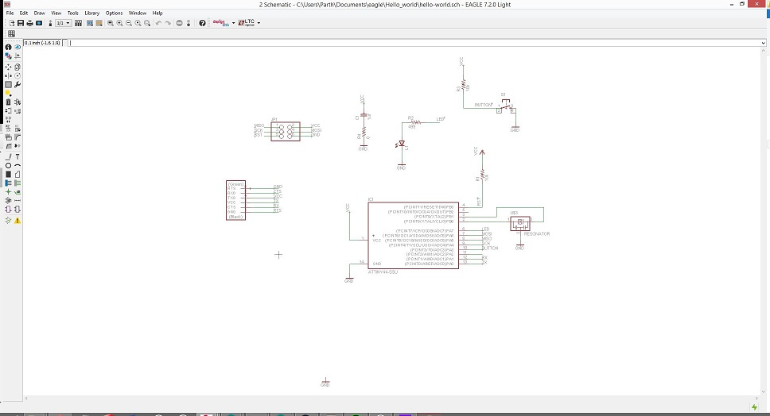I was glad not to have to do the wiring of these components, as they seemed very comple. the ability to name the ends of the wires so that they all link up correctly is a life saver
Next, I had to open the board , at first i was presented with this:

after which i proceeded to arrange the components on the field , somewhat randomly and ran the autoroute
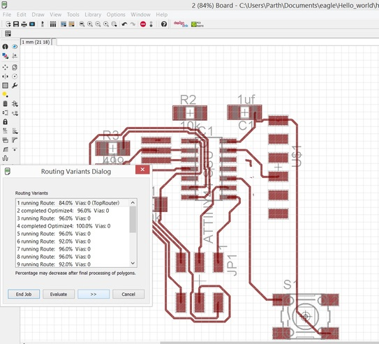 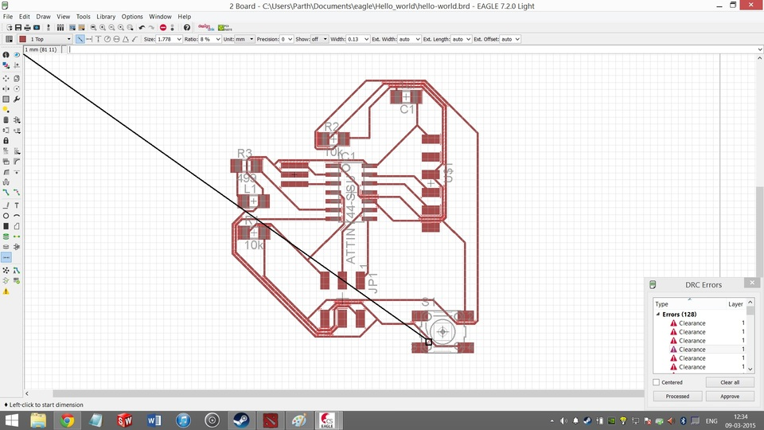 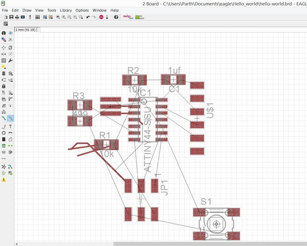after trying a few iterations and failing, I decided to mimic the tutorials placement of the parts and autoroute it

 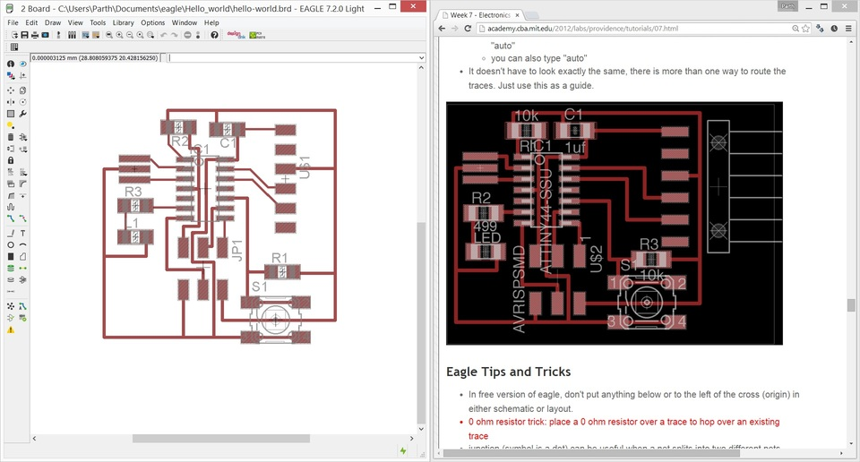
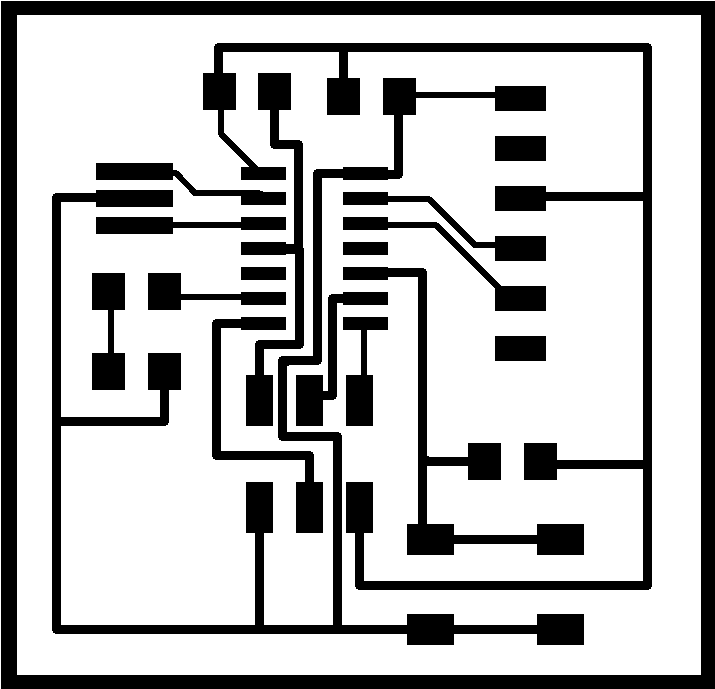
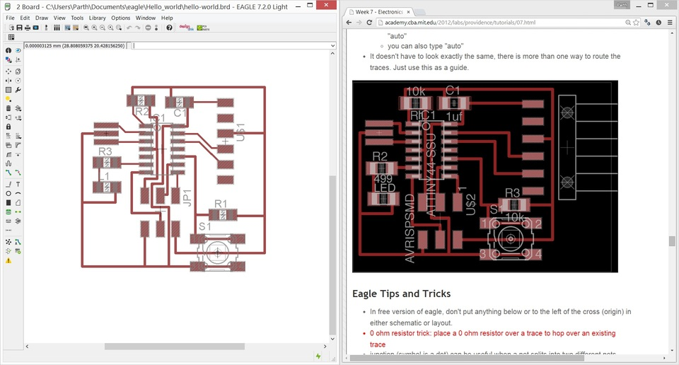
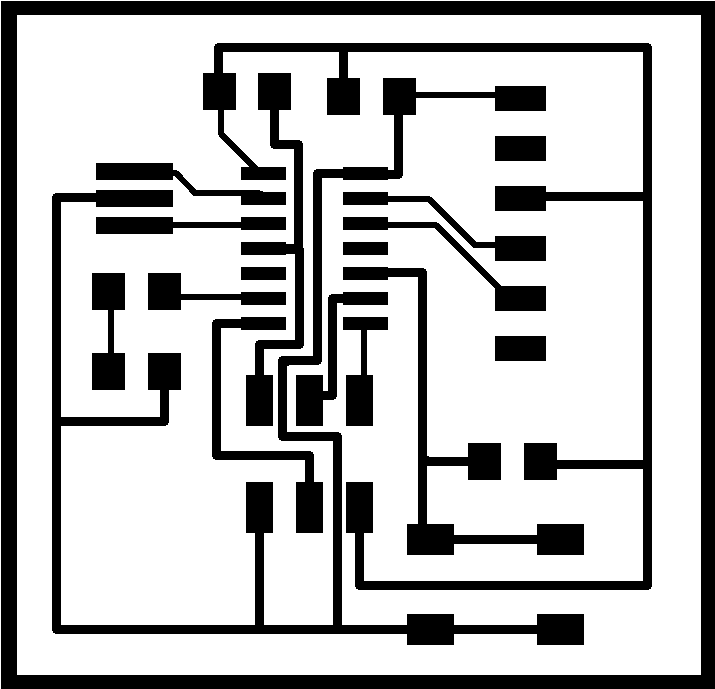
However the routing didnt pass the design check(which i unfortunately realised after trying to fabricate it), so i had to route it manually, having to add a jumper in the schematic to complete the circuit
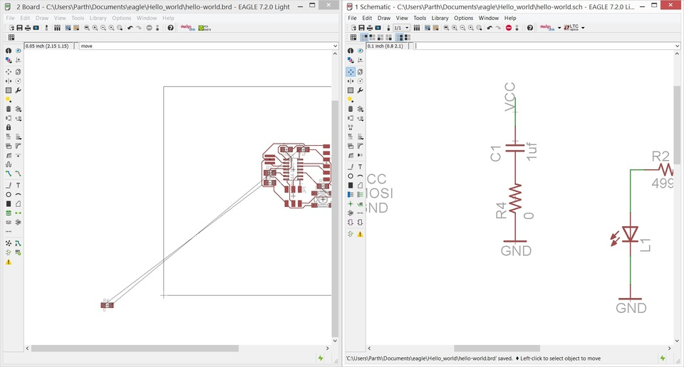 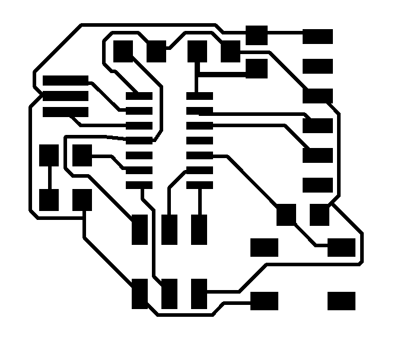
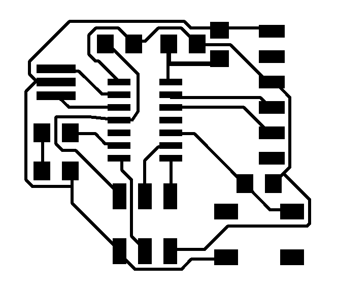
on to the manufacturing
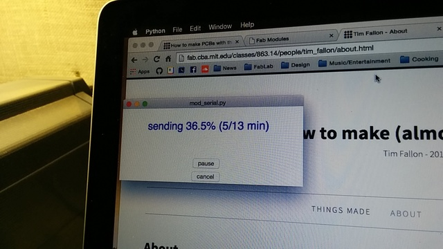and the board, stuffed